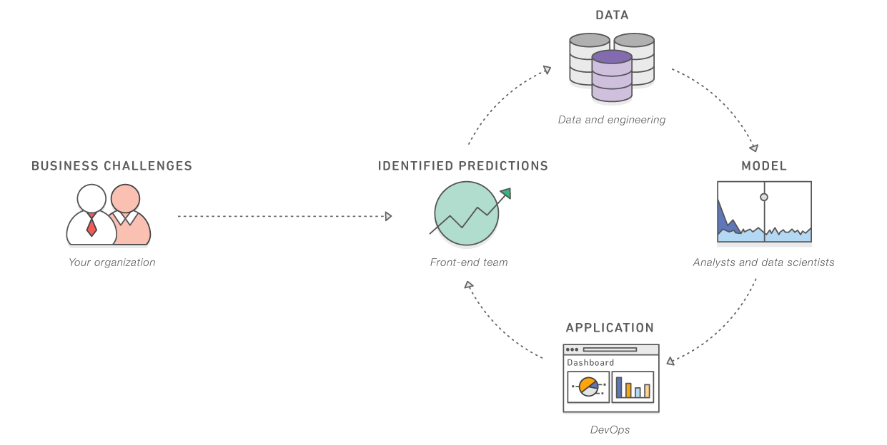

Apa itu Kecerdasan Buatan?
Kecerdasan Buatan (AI) adalah bidang ilmu komputer yang dikhususkan untuk memecahkan masalah kognitif yang umumnya terkait dengan kecerdasan manusia, seperti pembelajaran, penciptaan, dan pengenalan gambar. Organisasi modern mengumpulkan data dalam jumlah besar dari beragam sumber, seperti sensor pintar, konten buatan manusia, alat pemantauan, dan log sistem. Tujuan menggunakan AI adalah untuk menciptakan sistem belajar mandiri yang memperoleh makna dari data. Kemudian, AI dapat menerapkan pengetahuan tersebut untuk memecahkan masalah baru dengan cara layaknya yang dilakukan manusia. Misalnya, teknologi AI dapat merespons percakapan manusia secara bermakna, membuat gambar dan teks asli, dan membuat keputusan berdasarkan input data waktu nyata. Organisasi Anda dapat mengintegrasikan kemampuan AI dalam aplikasi Anda untuk mengoptimalkan proses bisnis, meningkatkan pengalaman pelanggan, dan mempercepat inovasi.
Bagaimana teknologi kecerdasan buatan berkembang?
Dalam makalah penting Alan Turing dari tahun 1950, “Computing Machinery and Intelligence,” ia mempertimbangkan apakah mesin bisa berpikir. Dalam makalah ini, Turing pertama kali menciptakan istilah kecerdasan buatan dan menyajikannya sebagai konsep teoritis dan filosofis.
Antara 1957 dan 1974, perkembangan dalam komputasi memungkinkan komputer untuk menyimpan lebih banyak data dan memproses lebih cepat. Selama periode ini, para ilmuwan mengembangkan lebih lanjut algoritma machine learning (ML). Kemajuan di bidang ini mendorong badang seperti Defense Advanced Research Projects Agency (DARPA) untuk menyediakan dana bagi penelitian AI. Pada awalnya, tujuan utama dari penelitian ini adalah untuk menemukan apakah komputer dapat menyalin dan menerjemahkan bahasa lisan.
Selama tahun 1980-an, peningkatan dana yang tersedia dan perangkat algoritmik yang digunakan oleh para ilmuwan dalam pengembangan AI membuat pengembangan menjadi lebih efisien. David Rumelhart dan John Hopfield menerbitkan makalah tentang teknik deep learning, yang menunjukkan bahwa komputer dapat belajar dari pengalaman.
Dari tahun 1990 hingga awal 2000-an, para ilmuwan mencapai banyak tujuan inti AI, seperti mengalahkan juara dunia catur. Dengan lebih banyak data komputasi dan kekuatan pemrosesan di era modern dibandingkan dekade sebelumnya, penelitian AI sekarang lebih umum dan mudah diakses. AI berkembang pesat menjadi kecerdasan umum buatan sehingga perangkat lunak dapat melakukan tugas-tugas yang kompleks. Perangkat lunak dapat membuat, mengambil keputusan, dan belajar sendiri, tugas-tugas yang sebelumnya hanya dapat dilakukan oleh manusia.
Apa saja manfaat kecerdasan buatan?
Kecerdasan buatan memiliki potensi untuk menawarkan berbagai manfaat bagi berbagai industri.
Memecahkan masalah yang kompleks
Teknologi AI dapat menggunakan ML dan jaringan deep learning untuk memecahkan masalah kompleks dengan kecerdasan layaknya manusia. AI dapat memproses informasi dalam skala besar, termasuk menemukan pola, mengidentifikasi informasi, dan memberikan jawaban. Anda dapat menggunakan AI untuk memecahkan masalah di berbagai bidang, seperti deteksi penipuan, diagnosis medis, dan analitik bisnis.
Meningkatkan efisiensi bisnis
Tidak seperti manusia, teknologi AI dapat bekerja 24/7 tanpa mengurangi tingkat performa. Dengan kata lain, AI dapat melakukan tugas manual tanpa kesalahan. Anda dapat memungkinkan AI untuk fokus pada tugas-tugas yang berulang dan menjemukan sehingga Anda dapat menggunakan sumber daya manusia di bidang bisnis lainnya. AI dapat mengurangi beban kerja karyawan sekaligus menyederhanakan semua tugas terkait bisnis.
Membuat keputusan yang lebih pintar
AI dapat menggunakan ML untuk menganalisis data dalam jumlah besar dengan lebih cepat daripada yang bisa dilakukan oleh manusia. Platform AI dapat melihat tren, menganalisis data, dan memberikan panduan. Dengan prakiraan data, AI dapat membantu menyarankan tindakan terbaik untuk masa depan.
Mengotomatiskan proses bisnis
Anda dapat melatih AI dengan ML untuk melakukan tugas dengan tepat dan cepat. Hal ini dapat meningkatkan efisiensi operasional dengan mengotomatiskan bagian bisnis yang sulit dilakukan oleh karyawan atau dianggap membosankan. Selain itu, Anda juga dapat menggunakan otomatisasi AI agar sumber daya karyawan dapat digunakan untuk pekerjaan yang lebih kompleks dan kreatif.
- Naomi
- Eka
- Tyan
- Felicita
- Rayhan
- Santi